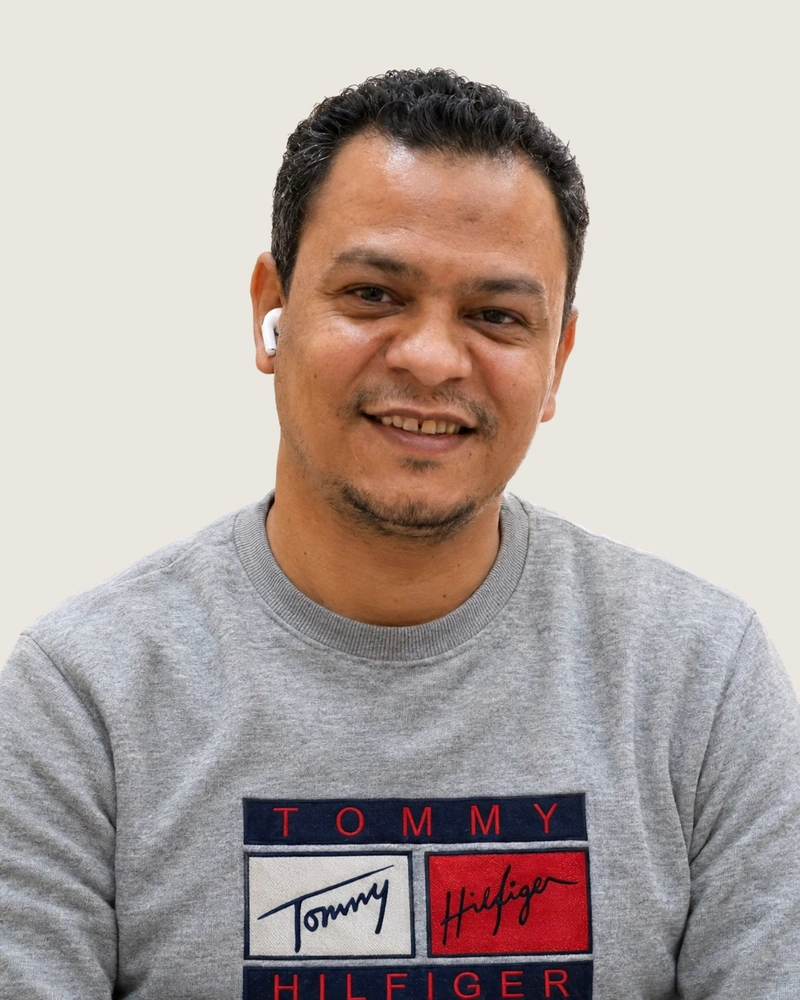
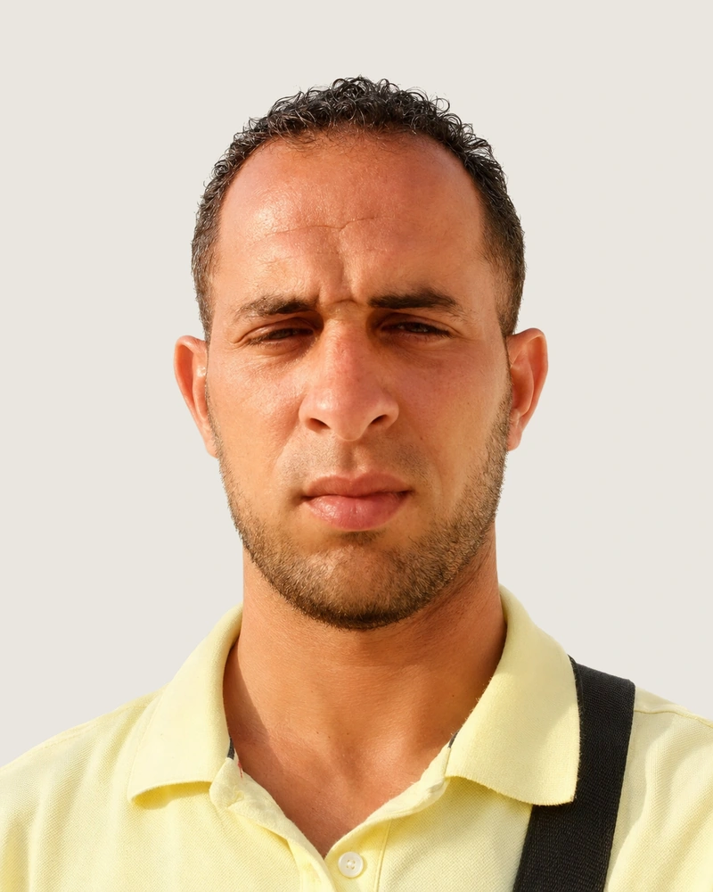
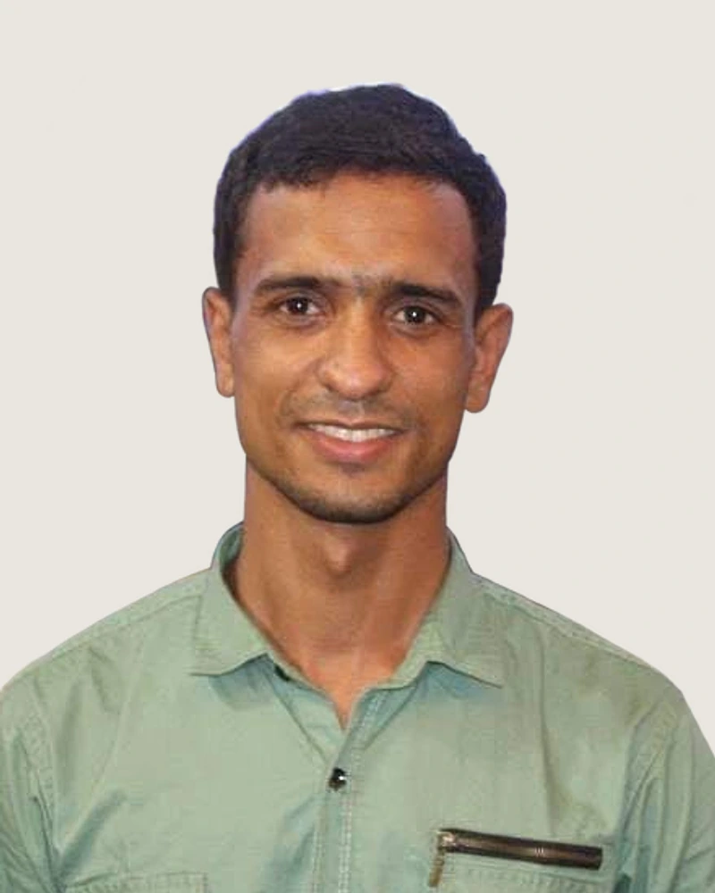
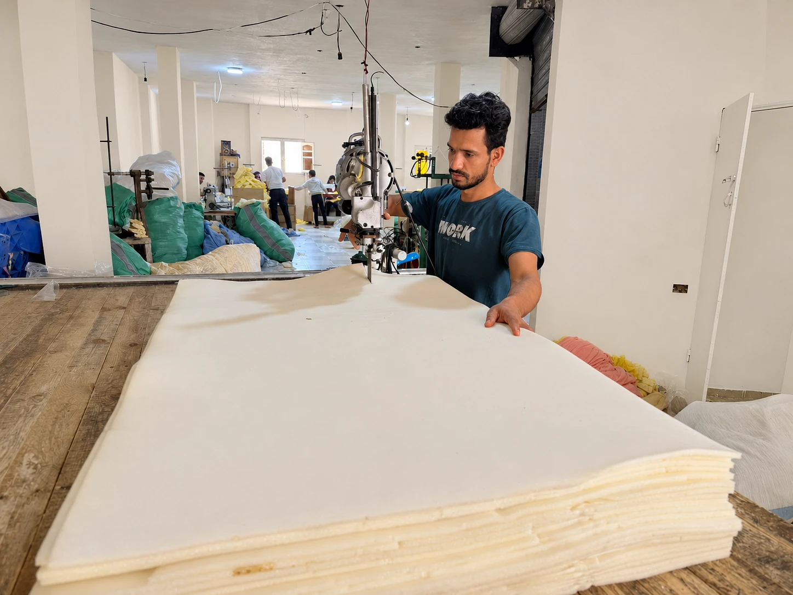

شركة ومصنع الفتح لانتاج وتصنيع اللوف الطبيعي
شركة عائلية
الحاج فتحى
كرم

محمد

ابراهيم

احمد
مصنع الفتح · SILK LOOFAH
نزرع الحكاية، ونصنع تفاصيلها.
في مصنع الفتح، نعمل في اللوف الطبيعي انطلاقًا من مزارعنا المصرية. وعلى مساحة 2,000 متر مربع، يشارك أكثر من 150 عاملًا في صناعة تشكيلة متنوعة، بإنتاج يتجاوز 8,000 قطعة يوميًا.
نقدم مقاسات وألوانًا وأشكالًا وموديلات متعددة، ونورد لتجار الجملة والمستوردين. ونصل بمنتجاتنا إلى الخليج ودول أوروبا، مع مكتب في اليونان يدعم تواصلنا مع شركائنا.

رحلة مترابطة
من الزراعة.. إلى شريكنا.
الزراعة
من مزارعنا المصرية تبدأ رحلة اللوف الطبيعي.
التجهيز
تجهيز الخامة لبدء مراحل التصنيع.
التصنيع
تشكيل وتجميع المنتجات في موديلات متنوعة.
التوريد والتصدير
منتجاتنا لشركاء الجملة في مصر والخليج وأوروبا.
من الأرض
مزارع لوف كبيرة تمد رحلتنا بخامتها الأساسية.
بأيدٍ مصرية
أكثر من 150 عاملًا يجمعهم العمل والحِرفة.
إلى العالم
تصدير للخليج وأوروبا، ومكتب لنا في اليونان.
جذور مصرية.. آفاق عالمية
من مصر إلى العالم.
من أرض مصر إلى أوروبا وأمريكا والشرق الأوسط، تمتد رحلة اللوف المصري إلى شركائنا حول العالم. ويدعم مكتبنا في اليونان تواصلنا الأوروبي.
خلّينا نبدأ شراكة من الطبيعة.
اختيارات متنوعة لطلبات الجملة والتصدير. احكِ لنا عن احتياجك.